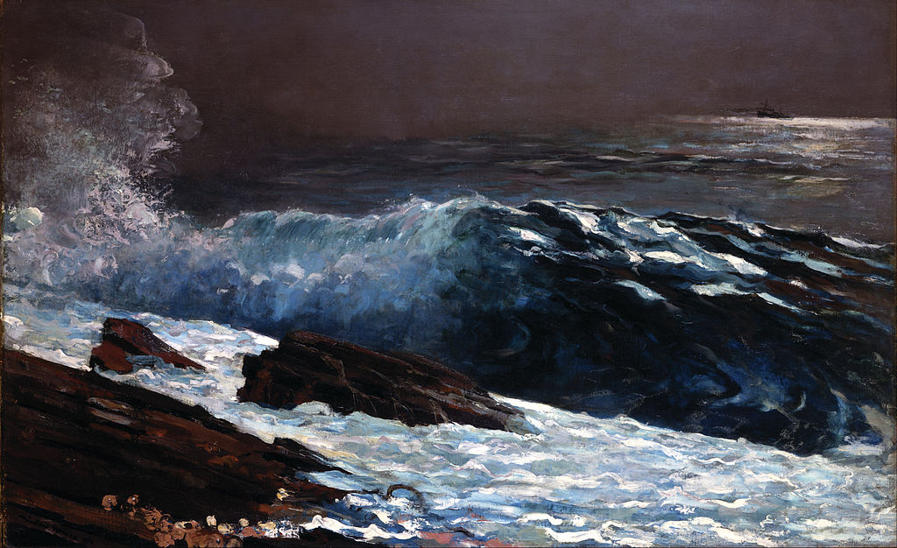

<head>
<meta charset="UTF-8" />
<meta name="keywords" content="drawing, painting" />
<meta name="description" content="drawings by Sunjy" />
<title>Sunjy</title>
<link rel="shortcut icon" type="image/x-icon" href="../../mImages/mCommon/favicon.ico" media="screen" />
<link rel="stylesheet" type="text/css" href="../../mCsses/mCommon/mCssA.css" />
<link rel="stylesheet" type="text/css" href="../../mCsses/mCommon/mCssB.css" />
<link rel="stylesheet" type="text/css" href="../../mCsses/mCommon/mCssC.css" />
<link rel="stylesheet" type="text/css" href="../../mCsses/mCommon/mCssD.css" />
<link rel="stylesheet" type="text/css" href="../../mCsses/mContent/mCssA.css" />
<link rel="stylesheet" type="text/css" href="../../mCsses/mContent/mCssB.css" />
<link rel="stylesheet" type="text/css" href="../../mCsses/mContent/mCssC.css" />
<link rel="stylesheet" type="text/css" href="../../mCsses/mContent/mCssD.css" />
</head>
<script type="text/javascript" src="../../mScripts/mContent/mContentAA.js" /></script>
<script type="text/javascript" src="../../mScripts/mContent/mContentAB.js" /></script>
<script type="text/javascript" src="../../mScripts/mContent/mContentAC.js" /></script>
<script type="text/javascript" src="../../mScripts/mContent/mContentAD.js" /></script>
<script type="text/javascript"></script> 
<script type="text/javascript">
document.write('<div class="mImgAbsolute"></div>');
/*
document.write('<p class="mFontSizeBColor" />From a white paper...</p>');
document.write('<table class="center"><tr><td>');
document.write('');
document.write('</td></tr></table>');
*/
</script>


<script type="text/javascript">
document.write('<p class="mFontSizeBColor" />Sunlight on the Coast</p>');
document.write('<p class="mFontSizeSColor" />“Sunlight on the Coast” by Winslow Homer depicts the sea’s power with stabs and dabs of his brush representing waves crashing against rocks. Despite the title of this canvas, the sun is struggled to break through the storm. The focus is on the sea with its majestic force hitting the coast.<br><br>In 1883, Homer moved to Prouts Neck, Maine, and lived at his family’s estate in the remodeled carriage house seventy-five feet from the ocean. During the rest of the mid-1880s, Homer painted his monumental sea scenes.<br><br>Homer died in 1910 at the age of 74 in his Prouts Neck studio. Several of his paintings remained unfinished. His Prouts Neck studio, a National Historic Landmark, is now owned by the Portland Museum of Art, which offers tours.<br></p>');
document.write('<table class="center" /><tr><td>');
document.write('<br>In 1883, Homer moved to Prouts Neck, Maine, and lived at his family’s estate in the remodeled carriage house seventy-five feet from the ocean. During the rest of the mid-1880s, Homer painted his monumental sea scenes.<br><br>Homer died in 1910 at the age of 74 in his Prouts Neck studio. Several of his paintings remained unfinished. His Prouts Neck studio, a National Historic Landmark, is now owned by the Portland Museum of Art, which offers tours.<br>" />');
document.write('</td></tr></table>');
</script>


